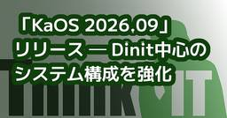
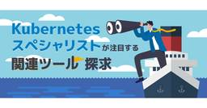
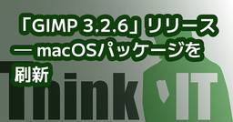
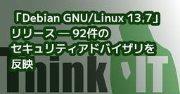
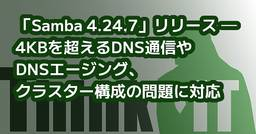
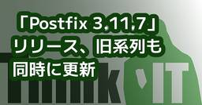
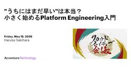
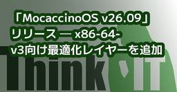
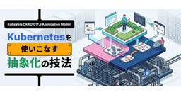
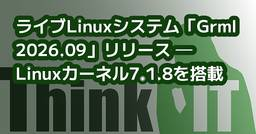

Think IT（シンクイット）
https://thinkit.co.jp/
【Think IT】“オープンソース技術の実践活用メディア” をスローガンに、インプレスグループが運営するエンジニアのための技術解説サイト。開発の現場で役立つノウハウ記事を毎日公開しています。
フィード
欧州CRA対応とSBOM運用。AI生成コードのOSS混入問題の対策とは ――スニペット単位で検出する「FossID」「Insignary Clarity」によるSBOM運用
Think IT（シンクイット）
欧州CRA対応とSBOM運用。AI生成コードのOSS混入問題の対策とは ――スニペット単位で検出する「FossID」「Insignary Clarity」によるSBOM運用itoh2026年9月16日イベント・セミナー2026シェア ポスト はてブ 優先するニュース提供元に追加 Sponsored by: テクマトリックス株式会社テクマトリックス株式会社は2026年7月28日、セミナー「施行が迫るEUサイバーレジリエンス法(CRA)における対応とSBOM運用 ～AI生成コードのOSS混入・脆弱性・ライセンスリスク対策～」をオンラインで開催した。デジタル製品に対してサイバーセキュリティ強化を義務づける欧州サイバーレジリエンス法(CRA)への対応についてと、AI生成コードのOSS混入による脆弱性やライセンスのリスク、さらにはSBOM(Software Bill of Materials：ソフトウェア部品表)ツールなどによる対策を3セッションで解説するものだ。セミナーでは、Covalent株式会社の小林弘樹氏がCRAへの対策について、Insignary Inc.のMike Pittenger氏がAI生成コードのOSS混入の問題への対策について、テクマトリックス株式会社の柳田誠氏が同社の取り扱うSBOM関連のツールやサービスについて紹介した。欧州CRAに対応するための要件を解説Covalent株式会社 Managing Directorの小林弘樹氏は、欧州サイバーレジリエンス法(CRA)の概要と脆弱性報告義務対象、SBOMによる脆弱性可視化の運用について解説した。Covalentは、サイバーセキュリティや先端技術について、調査・コンサルティングを提供する企業だ。テクマトリックスとも提携してソフトウェアサプライチェーンのセキュリティ・コンプライアンスのためのSBOM関連支援を提供している。Covalent株式会社 Managing Director 小林 弘樹氏まず、CRA概要とその策定の背景について。現在では、IoT機器をはじめネットワークにつながる製品が増えた。これにより、サイバー攻撃にさらされるリスクが高まり、攻撃による情報漏えいやインフラ停止などの被害も増加している。こうした背景からIoT機器をはじめとした「デジタル要素を備えた製品」のサイバーセキュリティをEU域内で
2時間前

「Kotlin」の「Swing」「Java2D」でデスクトップゲーム「Color」を開発してみよう
Think IT（シンクイット）
はじめにこの連載では、さまざまなプログラミング言語やライブラリで同じゲームを開発することで、容易にそのプログラミング言語に入門します。第11回の今回はプログラミング言語「Kotlin」を使って、次のURLのようなColorゲームを作ります。こちらからアセットをダウンロードしておいてください。また、こちらのURLではWeb版もプレイできます。Kotlin言語はJava言語と1:1に近いぐらい互換するので、第4回のJava言語の回の解説を書き換えて記事にしました。ColorゲームについてColorゲームの内容は第1回でも解説した通り、ゲームを開始したら、赤緑青の色ブロックをクリックします。すると背景色にその色が混ぜられるので、どんどんクリックして真っ白な背景にしていこうというゲームです。プログラミング言語についてKotlinはJetBrainsが開発した、静的型付けのプログラミング言語です。特にAndroidアプリ開発で広く使われており、Googleは2017年にAndroidの公式開発言語としてサポートを発表しました。既存のJavaライブラリをそのまま利用できるJavaとの高い互換性があり、Javaより少ないコードで同じ処理を書けることが多く、NullPointerExceptionを防ぐ仕組み(Null Safety)が言語レベルで組み込まれています。Androidだけでなく、サーバーサイド、デスクトップ、Web、iOS向けの開発にも利用できます。ビルドして書き出すのはJavaバイナリなので、Java同様JVMで動作します。【JVM(Java Virtual Machine、Java仮想マシン】Java言語で書かれたソースコード↓「中間言語」にコンパイル↓WindowsやmacOSやLinuxなどのJVMでどのOSでも同じ中間言語が動作「Swing」「Java2D」について「Swing」はウィンドウ、ボタン、メニューなどのGUIを作るライブラリで、「Java2D」は図形、画像、文字などを描画するためのAPIです。通常はSwingでウィンドウを作り、その中でJava2Dを使って描画します。どちらもJavaライブラリなので、KotlinではこのようにJavaのライブラリがそのまま使えます。開発のために必要となる環境の準備今回必要となる「JDK(Java Developm
2時間前
DevOpsはもう古いのか? ーAI時代で「変わるもの」と「変わらないもの」
Think IT（シンクイット）
はじめに本連載では全28回にわたり、オープンソースソフトウェア(OSS)や主要なクラウドサービスを題材に、ツールにフォーカスした実践的なDevOps環境の構築法を解説してきました。ここでいったん立ち止まり、これまでの歩みを振り返るとともに「DevOpsはもう古いのか?」という問いを軸に、AI時代におけるDevOpsの立ち位置やエンジニアのこれからの姿について考えていきましょう。振り返り：私たちが手に入れたDevOps開発サイクル本連載は、DevOpsの構成要素を一つひとつ手作業で構築し、開発から運用／フィードバックに至るイテレーションのサイクルを回すための実践的なツールを解説してきました。第1〜9回では、GitおよびGitHubを用いたブランチ戦略(GitHub Flow等)やブランチ保護ルール、PRを通じたコードレビュー運用など、開発の基盤づくりに取り組みました。続く第10〜18回の「デリバリー編」では、Dockerによるパッケージング、GitHub Actionsを用いたCI/CDパイプラインの構築、そしてAWS EKSとTerraformによるインフラのコード化(IaC)を扱いました。第19〜22回の「監視編」では、Amazon CloudWatchやContainer Insightsを用いてEKSクラスターやコンテナリソースを可視化する体制を整備。第23〜27回の「フィードバック編」では、AWS Budgetsによるコスト管理や、GuardDuty／Security Hubによるセキュリティ診断結果をSlackへ自動通知する仕組みを実装しました。そして前回の第28回では、CloudWatch Logs InsightsやLog Analyticsによるログの横断分析／調査を解説し、そこで得た知見を次の開発サイクルへとつなげる流れを示しました。このようにして、「開発 → デリバリー → 監視 → フィードバック → 調査と改善」というDevOpsのサイクルができあがります。 「DevOpsはもう古いのか?」という問い近年、生成AI(LLM)やAIエージェントが急速な進化を遂げています。プロンプトを1文入力するだけで、AIが高精度なコードだけでなくDockerfileやTerraformの定義ファイル、GitHub Actionsのワークフローまで自動生成して
1日前

「Difyを入れたのはいいが、誰が育てるのか」――開発元LangGeniusら3社がDifyエンジニア100名の育成に乗り出す
Think IT（シンクイット）
「Difyを入れたのはいいが、誰が育てるのか」――開発元LangGeniusら3社がDifyエンジニア100名の育成に乗り出すitoh2026年9月15日シェア ポスト はてブ 優先するニュース提供元に追加 📌 このニュース、3行で押さえるなら 📌Difyの開発元であるLangGeniusの日本法人、パーソルクロステクノロジー、JTPの3社が、Difyエンジニアの育成と企業現場でのAIエージェント導入・内製化支援を共同で開始。今後100名のDifyエンジニア育成を目指すパーソルクロステクノロジーが保有する人材基盤からDifyエンジニア候補者を選出し、JTPがDify導入・運用に関する研修を実施する。両社が連携して育成・提供体制を構築する背景には、現場の業務知識とAIアプリケーションの開発・運用知識を併せ持つ人材の確保・育成が多くの企業で課題となっている状況がある。ツール導入だけでなく、AIエージェントを自社で改善・運用できる人材と体制の整備が重要だとしている📝 Think IT編集部の見解 📝この取り組みが言い当てているのは、生成AI導入の第二段階で起きている詰まりだ。Difyのようなプラットフォームは、GUIでワークフローを組める点が評価されて導入が進んだ。ところが導入した後、業務に合わせて改善し続ける段階になると話が変わる。プロンプトの調整、ナレッジの更新、外部ツールとの接続、精度が出ないときの原因切り分け。これらは継続的な運用であり、一度作って終わりにならない。LangGeniusの張路宇氏が「本当に差がつくのは、ツールそのものではなく、現場の業務を深く理解し、自社でAIエージェントを開発・運用し続けられる人材」と述べているのは、この構造を指している。リリースが挙げる人材像も具体的だ。現場の業務知識とAIアプリケーション開発・運用の知識を併せ持つ人材。言い換えれば、業務部門とエンジニアの間にいる人ということになる。この職種は従来の組織図に存在しない。業務部門はAIの挙動を理解せず、エンジニアは業務の勘所を知らない。その間を埋める人がいないまま導入だけが進んだ結果が、いま各社で起きている停滞ではないだろうか。Think IT読者の立場から見ると、この発表は二重の意味を持つ。1つは自社の内製化体制をどう作るかという課題として。もう1つは、自身のスキルセット...
1日前

「KaOS 2026.09」リリース ─ Dinit中心のシステム構成を強化
Think IT（シンクイット）
「KaOS 2026.09」リリース ─ Dinit中心のシステム構成を強化 Niri／Noctalia 5.1を採用、全体の約70％を新ツールチェーンで再構築kawahara2026年9月14日シェア ポスト はてブ 優先するニュース提供元に追加 KaOS Development Teamは9月12日(現地時間)、Linuxディストリビューション「KaOS 2026.09」をリリースした。 「KaOS」は、QtとKDEアプリケーションに重点を置き、独自に構成されているx86-64向けのローリングリリース型Linuxディストリビューション。パッケージ管理にはpacmanを採用し、現在はDinitとNiri／Noctaliaを中心とするシステムを提供している。 「KaOS 2026.09」は、Dinitを全面的に採用した2番目の安定版となっており、起動、セッション、デバイス管理の構成を見直し、systemdへの依存をさらに縮小した。 「KaOS 2026.09」のハイライトは次の通り。 「KaOS 2026.09」はx86-64で動作する。ISOイメージはWebサイトからダウンロードできる。(川原 龍人/びぎねっと)[関連リンク]リリースアナウンス この記事をシェアしてください シェアする ポストする >ブクマする noteで書く 優先するニュース提供元にThink ITを追加 前の記事「DietPi 10.7」リリース ─ ネットワーク設定を刷新 関連記事この記事の筆者 kawahara kawaharaのプロフィールを見る 筆者の人気記事 「Linux Mint 22.3」、Linux 7.0搭載HWE ISOを公開8月11日 0:05 「Armbian 26.8」リリース ─ Linux 7.1と全面刷新したインストーラを採用8月27日 23:22 「Ubuntu 26.04.1 LTS」リリース ─ 8月25日までのアップデートを反映8月28日 21:40 「GNU Linux-libre 7.2」リリース ─ AMD、Qualcomm、Intel関連ドライバのdeblob処理を更新8月21日 0:33 「ReactOS 0.4.16」リリース ─ GUIインストーラーと統合イメージを導入8月31日 13:59 「GNU Emacs 31.1」リリース ─ T
1日前
「DietPi 10.7」リリース ─ ネットワーク設定を刷新
Think IT（シンクイット）
「DietPi 10.7」リリース ─ ネットワーク設定を刷新 複数インターフェースに対応、ARMv8 VMやLXC向けイメージも追加kawahara2026年9月14日シェア ポスト はてブ 優先するニュース提供元に追加 DietPi Projectは9月12日(現地時間)、軽量Linuxディストリビューション「DietPi 10.7」をリリースした。 DietPiは、CPUやメモリーの使用量を抑えることを重視したDebianベースのLinuxディストリビューション。Raspberry Piをはじめとするシングルボードコンピューターのほか、PC、仮想マシン、コンテナなどでも利用できる。 DietPi 10.7では、ネットワーク設定を刷新し、新しい「dietpi-network」ツールを導入した。ARMv8仮想マシン、仮想ネットワークを備えたコンテナ、LubanCat 4向けの新規イメージも追加されている。 DietPi 10.7のハイライトは次の通り。 DietPi 10.7は、Webサイトから入手できる。(川原 龍人/びぎねっと)[関連リンク]Release(GitHub)リリースノート この記事をシェアしてください シェアする ポストする >ブクマする noteで書く 優先するニュース提供元にThink ITを追加 前の記事「GIMP 3.2.6」リリース ─ macOSパッケージを刷新 次の記事「KaOS 2026.09」リリース ─ Dinit中心のシステム構成を強化 関連記事この記事の筆者 kawahara kawaharaのプロフィールを見る 筆者の人気記事 「Linux Mint 22.3」、Linux 7.0搭載HWE ISOを公開8月11日 0:05 「Armbian 26.8」リリース ─ Linux 7.1と全面刷新したインストーラを採用8月27日 23:22 「Ubuntu 26.04.1 LTS」リリース ─ 8月25日までのアップデートを反映8月28日 21:40 「GNU Linux-libre 7.2」リリース ─ AMD、Qualcomm、Intel関連ドライバのdeblob処理を更新8月21日 0:33 「ReactOS 0.4.16」リリース ─ GUIインストーラーと統合イメージを導入8月31日 13:59 「GNU Ema
2日前

「Postfix 3.11.6/ 3.10.13/3.9.14/3.8.20/3.7.22/3.6.20/3.5.27」リリース ─ SMTPポリシー回避やDoS問題を修正
Think IT（シンクイット）
「Postfix 3.11.6/ 3.10.13/3.9.14/3.8.20/3.7.22/3.6.20/3.5.27」リリース ─ SMTPポリシー回避やDoS問題を修正 3.11.6から3.5.27まで同時公開、OpenAI Securityなどが問題を報告kawahara2026年8月12日シェア ポスト はてブ 優先するニュース提供元に追加 postfix.orgは8月11日（現地時間）、メール転送エージェント「Postfix 3.11.6/ 3.10.13/3.9.14/3.8.20/3.7.22/3.6.20/3.5.27」をリリースした。 「Postfix」は、SMTPを利用して電子メールを転送・配送するオープンソースのメール転送エージェント（MTA）。高速性、管理のしやすさ、安全性を重視して開発されており、LinuxやBSDをはじめとするUnix系OSで利用されている。 「Postfix 3.11.6」では、SMTPの状態管理に起因するポリシー制御の回避、BDATコマンドを利用したメモリ枯渇、アドレス検証キャッシュの汚染など、複数のセキュリティ問題が修正されている。主な修正点は次の通り。〇メッセージがsmtpd_end_of_data_restrictionsで拒否された際に、MAIL FROMおよびRCPT TOの状態がリセットされない問題を修正 「Postfix 3.11.6/ 3.10.13/3.9.14/3.8.20/3.7.22/3.6.20/3.5.27」などのソースコードは、Webサイトから入手できる。(川原 龍人/びぎねっと)[関連リンク]リリースアナウンス(3.11.6)The Postfix この記事をシェアしてください シェアする ポストする >ブクマする noteで書く 優先するニュース提供元にThink ITを追加 前の記事「SparkyLinux 8.4」リリース ─ 32bit PC向けISOを復活 次の記事「QEMU 11.1.0」リリース ─ UFS 4.1のWrite BoosterやHIDをサポート 関連記事この記事の筆者 kawahara kawaharaのプロフィールを見る 筆者の人気記事 「Linux Mint 22.3」、Linux 7.0搭載HWE ISOを公開8月11日 0:05 「Armbian 2
1ヶ月前

「Karpenter」でKubernetesのノード運用を自動化してみよう
Think IT（シンクイット）
はじめに3-shakeのSreake事業部に所属する小池(@r4ynode)です。Kubernetesのノード管理には、ここ数年で選択肢が増えました。EKSのAuto ModeやGKEのAutopilotのように、ノードのプロビジョニングからスケーリング、更新までをマネージドに委ねられるサービスが登場しています。少し前まで、ノードの調達は手間のかかる作業でした。ワークロードごとにインスタンスタイプを見積もり、ASG(Auto Scaling Group)を用途別にいくつも用意し、AMI更新やOSのEOLが来ればノードを入れ替える。過剰に構えればコストがかさみ、絞りすぎればPodがPending状態のまま滞留する。キャパシティプランニングの難しさと更新の負荷は、長くノード運用に付いて回ってきました。もっとも、マネージドに委ねるか自前で管理し続けるかは取捨選択です。コストや制御性を理由に、ノードを自分たちで運用する組織も少なくありません。どちらを選ぶにせよ、ノードを増減する仕組みが何を基準に動いているのかを理解しておく価値はあります。例えば、EKS Auto Modeは内部で「Karpenter」を動かしています。また、オートスケーリングにはPodをスケールする層とノードをスケールする層があり、以前に本連載で扱ったHPAやKEDAは前者、Karpenterは後者にあたります。本記事では、このKarpenterを取り上げます。Cluster Autoscalerとの違いを起点に、ノードの生成から終了までを担うライフサイクル管理の仕組み、そして運用上の注意点を見ていきましょう。「Karpenter」とはKarpenterは、Kubernetes向けのオープンソースのノードオートスケーラーです。Podの要求に合わせてノードをプロビジョニングし、不要になれば削除します。もともとAWSが主導していましたが、現在はKubernetes SIG配下のkubernetes-sigs/karpenterとして管理され、2026年7月時点でv1.14.0が出ています。コアはクラウドに依存しない設計で、AWS向け実装(karpenter-provider-aws)が最も成熟しています。基本動作は、次の4ステップです。スケジューラーがスケジュール不能(Unschedulable)と判定したPo
2日前
Robloxが2025年の経済波及効果レポートを発表、HTCのAIスマートグラス新デザインを追加 ほか
Think IT（シンクイット）
今週も、バーチャル領域の最新動向をお届けします。Robloxが発表した年次レポートでは、クリエイター収益が15億ドルを超え、個人を中心とした巨大な経済波及効果が明らかになりました。HTCからはAIスマートグラス「VIVE Eagle」の新デザイン「ラウンド」や機能拡張が発表されています。さらに水中でのダイビングに特化した導波路搭載のARマスク「AREX ONE」や、3Dアバター文化の発展を目指すピクシブとVRChatによる資本業務提携の取り組みを紹介していきます。Roblox、2025年のクリエイター収益を15億ドル超と発表 Robloxは年次の経済波及効果レポートを公開し、2025年の世界全体のクリエイター収益が15億ドルを超えたと発表しました。2024年の9億2300万ドルとの比較で大幅な成長を記録しており、対象市場全体で約12,000人分のフルタイム換算雇用を創出しています。特に米国市場ではGDPへの影響額が7億5200万ドルに達し、そのうち83％が個人クリエイターによる貢献となっています。こうした経済圏の広がりを支援するため、テキストプロンプトで手軽にゲームを作成できるモバイル向け機能「Build」のテスト提供や、開発者の育成プログラムである「Jumpstart」「Incubator」などを展開し、クリエイターのスキル開発と経済機会の創出を加速させています。本ニュースの詳細はこちら：Roblox、2025年のクリエイター収益15億ドル超と発表https://www.moguravr.com/roblox-2026-economic-impact-report/HTC、AIスマートグラス「VIVE Eagle」に新デザインのラウンドを追加 HTC NIPPONは、AIスマートグラス「VIVE Eagle」の新しいフレームデザインとして、柔らかい曲線が特徴の「ラウンド」を追加しました。従来から販売中の「スクエア」と同等の機能を有し、新アクセサリーの外付けバッテリー「VIVE Power Boost」により最大80％分の容量を追加できます。さらに全モデル対象のアップデートも実施され、3K解像度での動画撮影やスローモーション機能、YouTubeやTwitchへの一人称視点ライブ配信に対応しました。また音声翻訳機能も拡充されたほか、首振り等のジェスチャー操作も可能にな
2日前

「GIMP 3.2.6」リリース ─ macOSパッケージを刷新
Think IT（シンクイット）
「GIMP 3.2.6」リリース ─ macOSパッケージを刷新 ペンの回転入力やフォント読み込み性能も改善、不具合修正もkawahara2026年9月14日シェア ポスト はてブ 優先するニュース提供元に追加 GIMP Teamは9月10日(現地時間)、オープンソースの画像編集ソフトウェア「GIMP 3.2.6」をリリースした。 GIMPは、画像の加工や写真のレタッチ、イラスト制作などに利用できるクロスプラットフォーム対応の画像編集ソフトウェア。レイヤーやフィルター、カラーマネジメント、プラグインによる機能拡張などを備える。 「GIMP 3.2.6」のハイライトは次の通り。〇レイヤーグループに対して「切り取り」を実行できるように変更 macOS版では、DMGパッケージをLinux版やWindows版と同時に作成する新しいビルド体制へ移行した。ダーク／ライトモード、スクロールバー、キーボードショートカット、ドラッグ＆ドロップなどmacOS固有の機能も改善されている。従来のmacOS向け開発者パッケージは廃止され、プラグイン開発者は新しいGIMP SDKまたはソースビルドを利用する。Webサイトからダウンロードできる。(川原 龍人/びぎねっと)[関連リンク]リリースアナウンス この記事をシェアしてください シェアする ポストする >ブクマする noteで書く 優先するニュース提供元にThink ITを追加 前の記事「Debian GNU/Linux 13.7」リリース ─ 92件のセキュリティアドバイザリを反映 次の記事「DietPi 10.7」リリース ─ ネットワーク設定を刷新 関連記事この記事の筆者 kawahara kawaharaのプロフィールを見る 筆者の人気記事 「Linux Mint 22.3」、Linux 7.0搭載HWE ISOを公開8月11日 0:05 「Armbian 26.8」リリース ─ Linux 7.1と全面刷新したインストーラを採用8月27日 23:22 「Ubuntu 26.04.1 LTS」リリース ─ 8月25日までのアップデートを反映8月28日 21:40 「GNU Linux-libre 7.2」リリース ─ AMD、Qualcomm、Intel関連ドライバのdeblob処理を更新8月21日 0:33 「ReactOS 0.
2日前

「Debian GNU/Linux 13.7」リリース ─ 92件のセキュリティアドバイザリを反映
Think IT（シンクイット）
「Debian GNU/Linux 13.7」リリース ─ 92件のセキュリティアドバイザリを反映 106パッケージを修正、Linux ABI 6.12.107+deb13の更新済みインストーラーも公開kawahara2026年9月13日シェア ポスト はてブ 優先するニュース提供元に追加 Debian Projectは9月12日(現地時間)、Linuxディストリビューション「Debian 13 "trixie"」のポイントリリースとなる「Debian GNU/Linux 13.7」を公開した。 Debianは、コミュニティによって開発されている汎用Linuxディストリビューション。サーバーやデスクトップ、クラウド環境などで広く利用され、多数のLinuxディストリビューションの基盤にもなっている。 Debian GNU/Linux 13.7は、セキュリティ問題の修正を中心に、深刻な不具合への対応を安定版へ統合した更新。106パッケージに重要な修正が加えられ、LinuxカーネルやWebブラウザ、メールサーバ、暗号ライブラリなどを対象とする92件のDebian Security Advisory(DSA)が反映された。ハイライトは次の通り。 今回統合された修正には、QEMUのセキュアブート回避(CVE-2026-16288)、libvirtの権限昇格(CVE-2026-63622)、dnsmasqのバッファーオーバーフロー(CVE-2026-12725)などが含まれる。 「Debian GNU/Linux 13.7」は、Webサイトからダウンロードできる。Debian 13.6のユーザは、アップグレードを施すことで13.7の環境となる。(川原 龍人/びぎねっと)[関連リンク]リリースアナウンスtrixie リリース情報 この記事をシェアしてください シェアする ポストする >ブクマする noteで書く 優先するニュース提供元にThink ITを追加 前の記事「Samba 4.24.7」リリース ─ 4KBを超えるDNS通信やDNSエージング、クラスター構成の問題に対応 次の記事「GIMP 3.2.6」リリース ─ macOSパッケージを刷新 関連記事この記事の筆者 kawahara kawaharaのプロフィールを見る 筆者の人気記事 「Linux Mint 22.3」
3日前

「Samba 4.24.7」リリース ─ 4KBを超えるDNS通信やDNSエージング、クラスター構成の問題に対応
Think IT（シンクイット）
「Samba 4.24.7」リリース ─ 4KBを超えるDNS通信やDNSエージング、クラスター構成の問題に対応 DNSやPOSIX ACLなどの不具合を複数修正kawahara2026年9月12日シェア ポスト はてブ 優先するニュース提供元に追加 Samba Teamは9月9日(現地時間)、オープンソースのファイル・プリント共有ソフトウェア「Samba 4.24.7」をリリースした。 「Samba」は、Windowsで利用されるSMBプロトコルをオープンソースで実装したソフトウェア。LinuxやBSDなどのUnix系OSとWindowsとのファイル／プリンター共有に利用できるほか、Active Directory互換のドメインコントローラーとしても動作する。 「Samba 4.24.7」は、安定系列である「Samba 4.24系列」の最新版。ハイライトは次の通り。 「Samba 4.24.7」は、Webサイトからダウンロードできる。(川原 龍人/びぎねっと)[関連リンク]リリースノート日本Sambaユーザ会 この記事をシェアしてください シェアする ポストする >ブクマする noteで書く 優先するニュース提供元にThink ITを追加 前の記事「Postfix 3.11.7」リリース、旧系列も同時に更新 次の記事「Debian GNU/Linux 13.7」リリース ─ 92件のセキュリティアドバイザリを反映 関連記事この記事の筆者 kawahara kawaharaのプロフィールを見る 筆者の人気記事 「Linux Mint 22.3」、Linux 7.0搭載HWE ISOを公開8月11日 0:05 「Armbian 26.8」リリース ─ Linux 7.1と全面刷新したインストーラを採用8月27日 23:22 「Ubuntu 26.04.1 LTS」リリース ─ 8月25日までのアップデートを反映8月28日 21:40 「GNU Linux-libre 7.2」リリース ─ AMD、Qualcomm、Intel関連ドライバのdeblob処理を更新8月21日 0:33 「ReactOS 0.4.16」リリース ─ GUIインストーラーと統合イメージを導入8月31日 13:59 「GNU Emacs 31.1」リリース ─ Tree-sitter文法の自動イ
3日前

「Postfix 3.11.7」リリース、旧系列も同時に更新
Think IT（シンクイット）
「Postfix 3.11.7」リリース、旧系列も同時に更新 旧系列も同時更新、MySQLの証明書検証やTLSセッション分離も強化kawahara2026年9月12日シェア ポスト はてブ 優先するニュース提供元に追加 Postfix.orgは9月8日(現地時間)、オープンソースのメール転送エージェント「Postfix 3.11.7」をリリースした。 Postfixは、電子メールの受信や配送、他のメールサーバーへの転送などを行うメール転送エージェント(MTA)。LinuxやBSDなどのUnix系OSで広く利用されている。ライセンスはIBM Public License。 「Postfix 3.11.7」は、MySQLのTLS証明書検証やSMTPの応答処理、ローカル配送、データベース移行機能などの修正、強化のほか、SMTPスマグリングやリモートからのサービス拒否(DoS)につながる問題を含む複数の不具合などが修正されている。 「Postfix 3.11.7」のハイライトは次の通り。 なお、本リリースの公開と同時に、サポート対象系列のPostfix 3.10.14、3.9.15、3.8.21も公開されている。サポート終了済みの3.7、3.6、3.5系列についても、それぞれ3.7.23、3.6.21、3.5.28が用意されている。ただし、これら旧系列には2026年6月に公開された大容量SMTP入力とTLSA解析に関する修正が含まれないため、継続利用は注意が必要。 Postfixは、各国のミラーサイトから無償でダウンロード・利用できる。(川原 龍人/びぎねっと)[関連リンク]リリースアナウンス(3.11.7) この記事をシェアしてください シェアする ポストする >ブクマする noteで書く 優先するニュース提供元にThink ITを追加 前の記事「MocaccinoOS v26.09」リリース ─ x86-64-v3向け最適化レイヤーを追加 次の記事「Samba 4.24.7」リリース ─ 4KBを超えるDNS通信やDNSエージング、クラスター構成の問題に対応 関連記事この記事の筆者 kawahara kawaharaのプロフィールを見る 筆者の人気記事 「Linux Mint 22.3」、Linux 7.0搭載HWE ISOを公開8月11日 0:05 「Armbian
4日前
「MySQL」と「PostgreSQL」の安定運用に必要な「監視」の基本を理解する 1
1
Think IT（シンクイット）
はじめにこの連載では、オープンソースのリレーショナル・データベース(RDB)の「MySQL」と「PostgreSQL」を使いこなすヒントを、両製品の共通点と違いを確認しながら解説していきます。現在、それぞれの製品をベースとしたクラウド・データベースは複数存在しています。この連載では製品の比較を多く行いますが、製品機能や仕様の優劣についてを論ずる目的のものではないことはあらかじめご了承ください。第8回の今回は、MySQLとPostgreSQLを安定して運用するための「監視」について解説します。データベースの監視では、プロセスが動いているかを確認するだけではなく、CPUやメモリ、ディスクI/OなどのOSリソース、データベース内部の接続数やメモリ、キャッシュの利用状況などを継続的に確認する必要があります。また、MySQLとPostgreSQLには、それぞれデータベース内部の状態を確認するためのさまざまな統計情報や監視機能が用意されています。今回は監視の基本となる「死活監視」と「リソース監視」を中心に、MySQLとPostgreSQLでどのような情報を確認できるのかを紹介します。SQL文の性能、ロック競合、レプリケーションの状態といった、より詳細な監視については次回で取り上げます。データベースでは何を監視するのかデータベースの監視では、サーバーやプロセスが動いているかだけではなく、OSやデータベース内部のリソース利用状況、さらに実行されるSQL文の性能まで確認する必要があります。監視項目は非常に多くありますが、大きく以下の3つのレイヤーに分けて考えることができます。サーバーやデータベースが正常に動作しているかOSおよびデータベース内部のリソースに問題がないかSQL文が期待する性能で処理されているか表1：データベースで監視する主な項目分類主な監視項目監視の目的死活およびOSリソースプロセス、接続可否、CPU、メモリ、ストレージ容量、ディスクI/O、ネットワークサービス停止やサーバーのリソース不足の検出データベース内部リソース接続数、メモリ、キャッシュ、ログ、バックグラウンド処理などデータベース内部のボトルネックや異常の検出SQL文の性能実行時間、実行回数、待機時間、読み取り量、実行計画性能低下の原因となるSQL文の特定今回は、このうち死活監視とOSリソース、データベース内部リ
5日前

【クラウドネイティブ会議】チーム内の課題解決から共通基盤へ育てるPlatform Engineeringの始め方 1
Think IT（シンクイット）
マイクロサービスアーキテクチャは、サービスごとの独立した開発やリリースを可能にする一方、言語ランタイムのEoL対応やライブラリの脆弱性対応、リリース準備といった作業がサービスの数だけ繰り返し発生し、本来進めたい開発の工数を圧迫することがある。「クラウドネイティブ会議」に登壇したアクセンチュア テクノロジー コンサルティング本部の崎原晴香氏は、こうした横断的な課題を共通の仕組みで解決するPlatform Engineeringについて「“うちにはまだ早い”は本当？ ─ 小さく始めるPlatform Engineering入門」と題して、Kubernetesや大規模な専任組織がなくても、身近な困りごとの共有や小さな便利ツール作りから始められるとして、その考え方と段階的な進め方を解説した。Kubernetesは必須ではない ―― 共通化こそPlatform Engineeringの本質アクセンチュアの崎原晴香氏は冒頭、自身が業務で直面した二つの出来事を紹介した。一つは、Python 3.9を使用するAWS LambdaのランタイムがEoLを迎えるという通知が大量に届いたことである。多数のLambdaを利用していたため、更新に伴う修正やデグレード確認が大きな作業になった。そしてもう一つは、広く使われているライブラリに脆弱性が見つかり、複数のマイクロサービスのリポジトリにDependabotからプルリクエストが作成されたことである。期限までに本番環境へ反映する必要があり、大きな割り込みタスクとなった。「一度やって終わりではなく、こうした作業は何度も繰り返しやってきます。そのたびに、本来やるはずだった開発がこぼれ落ちていきます」と崎原氏は語った。EoL対応や脆弱性対応、リリース準備は必要だが、顧客へ直接価値を届けるビジネスロジックの開発ではない。しかも、同じような作業が各サービスで個別に発生する。崎原氏は、この繰り返し作業に開発工数が奪われる問題への答えとして、Platform Engineeringを挙げた。Platform Engineeringという言葉から、Kubernetesを思い浮かべる人は多い。しかし崎原氏は「Kubernetesがないとできない、というのはウソです」と指摘した。 KubernetesとPlatform Engineeringが結び付けられて語られ
5日前

「MocaccinoOS v26.09」リリース ─ x86-64-v3向け最適化レイヤーを追加
Think IT（シンクイット）
「MocaccinoOS v26.09」リリース ─ x86-64-v3向け最適化レイヤーを追加 Linux 6.18.50 LTS、Mesa 26.2.1、COSMIC 1.7.0を搭載kawahara2026年9月11日シェア ポスト はてブ 優先するニュース提供元に追加 MocaccinoOS Teamは9月8日(現地時間)、Linuxディストリビューション「MocaccinoOS v26.09」をリリースした。 MocaccinoOSは、最小構成と扱いやすさを重視したLinuxメタディストリビューション。コンテナ技術を利用する静的パッケージマネージャー「Luet」を採用しており、デスクトップ向けのMocaccino DesktopはGentoo Linuxを基盤としている。 MocaccinoOS v26.09では、カーネルをLinux 6.18.50 LTSにアップデートしたほか、グラフィックススタックのMesa 26.2.1とデスクトップ環境のCOSMIC 1.7.0を収録した。IntelのRaptor Lakeを含むCPU／プラットフォームや、ASUS ROG／Armoury対応も改善されている。ハイライトは次の通り。 今回追加されたx86-64-v3向けレイヤーでは、Mesa、Vulkan Loader、libepoxy、libglvnd、GLEW、FFmpeg、OpenALなどのグラフィックスおよびマルチメディア関連ライブラリを最適化している。 「MocaccinoOS」は、公式サイトまたはsourceforgeから入手できる。(川原 龍人/びぎねっと)[関連リンク]リリースアナウンス この記事をシェアしてください シェアする ポストする >ブクマする noteで書く 優先するニュース提供元にThink ITを追加 前の記事「KDE Plasma 6.7.5」リリース ─ KWinやDiscoverの不具合を修正 次の記事「Postfix 3.11.7」リリース、旧系列も同時に更新 関連記事この記事の筆者 kawahara kawaharaのプロフィールを見る 筆者の人気記事 「Linux Mint 22.3」、Linux 7.0搭載HWE ISOを公開8月11日 0:05 「Armbian 26.8」リリース ─ Linux 7.1と全面刷新した
5日前

「Kro」深掘り：定義の実体をCRDにするという選択 1
Think IT（シンクイット）
はじめにこれまでの連載では、開発者に見せるAPIをプラットフォームチームがどう設計するかを追ってきました。今回扱うKroは、その答えの1つです。Kroとは結局何なのか。そして、組織のAPIの基盤として採用してよいのか。RGDの書き方から内部の仕組み、現在地までを順に見ていきます。Kroとは何かKroは、組織独自のApplication Modelを、Kubernetesのカスタムリソースとして公開するためのツールです。プラットフォームチームが型とレシピをYAMLに書くと、その型がCRDとしてクラスタに登録されます。開発者が書くのは、そのCRDのインスタンスだけです。第2回で並べた分類では、コンポジション方式にあたります。KubeVelaのように既定のComponent／Traitモデルを使うのではなく、公開するAPIの語彙をプラットフォームチームが定義します。登場するもの誰が用意するか位置づけResourceGraphDefinition(RGD)プラットフォームチーム公開するAPIの形と、そこから作るリソースのテンプレート生成されたCRD(以下、生成CRD)Kro(RGDから自動生成)開発者向けAPIの実体そのCRDのインスタンス開発者公開されたAPIを使う実リソースKro(インスタンスから展開)Deployment、ServiceなどKroは2024年11月のKubeCon North Americaで公開されました。現在はKubernetes SIG Cloud Providerのサブプロジェクトで、AWS・Microsoft Azure・Google Cloudをはじめとする各社のメンテナが開発しています(kubernetes-sigs/kro)。執筆時点の最新はv0.9.3(2026年7月27日)、APIバージョンはv1alpha1です。Adopt事例もかなりあります。Spotifyは2026年3月のKubeCon Europeで、kubebuilderでのoperator自作からKroと内製operatorへ移した事例を報告しました。AWSは2025年11月30日からAmazon EKS CapabilitiesでKroをマネージドサービスとして提供しています。2026年7月のKubeCon Japanでは、SAPのJakob Möller氏らが「Evo
6日前

「競合するAWSとGoogle Cloudが同じ接続仕様に乗った」――エクイニクスの「Fabric One」が示すマルチクラウド接続の現在地
1
Think IT（シンクイット）
📌 このニュース、3行で押さえるなら 📌エクイニクスが、分散化したクラウド・ネットワーク・AI環境の接続を簡素化するマネージド型のAny-to-Any接続サービス「Equinix Fabric One」を発表。利用企業は接続したい対象と要件を指定するだけで、必要な接続をFabric Oneが判断し自動的に提供するAWSとGoogle Cloudが共同で策定したオープンソースの「OpenAPI 3.0 Interconnect」仕様を採用。アプリケーションやAIエージェントが人手を介さず、プログラムによって接続の検出・要求・プロビジョニングを実行できるようになるポータル、API、自動化ワークフロー、エージェントベースのリクエスト、自然言語プロンプトのいずれからでも指定でき、ルーティング・クラウド接続・暗号化・冗長化・フェイルオーバーのオーケストレーションと運用管理を単一のマネージドサービスが担う。2026年後半にベータ提供、北米で2027年中の一般提供を予定📝 Think IT編集部の見解 📝この発表で見逃せないのは、製品そのものよりも、その土台にあるOpenAPI 3.0 Interconnectという仕様の存在だ。クラウド事業者間の接続仕様は、これまで各社が個別に定義してきた。AWSにはDirect Connect、Google CloudにはPartner Interconnect、Azureには ExpressRouteがあり、それぞれ手順も概念も異なる。マルチクラウドを組む企業は、その差分を埋める作業を自前で引き受けるか、SIerに委託するしかなかった。競合する2社が共同でオープンソースの接続仕様を策定し、GitHubで公開しているという事実は、この状況が変わりつつあることを示している。なぜ変わるのか。AWSのネットワークサービス担当バイスプレジデントの発言に手がかりがある。顧客が複数のクラウドやAI環境間の接続方法を自ら考える必要はなく、要件を定義するだけでよい、という主張だ。裏を返せば、接続の煩雑さが原因でマルチクラウドやAIワークロードの展開が遅れることは、クラウド事業者にとっても機会損失になっているということだろう。接続仕様の差別化がもはや競争優位にならず、むしろ市場全体の成長を妨げる段階に入ったという判断が透けて見える。インフラエンジニアの...
6日前
「KDE Plasma 6.7.5」リリース ─ KWinやDiscoverの不具合を修正
Think IT（シンクイット）
「KDE Plasma 6.7.5」リリース ─ KWinやDiscoverの不具合を修正 Waylandの入力処理やカラープロファイル、ネットワーク管理の安定性も改善kawahara2026年9月9日シェア ポスト はてブ 優先するニュース提供元に追加 KDEは9月8日(現地時間)、デスクトップ環境「KDE Plasma 6.7.5」をリリースした。 「KDE Plasma 6.7.5」は、最新安定系列であるKDE Plasma 6.7系列のアップデートリリース。ハイライトは次の通り。 「KDE Plasma 6.7.5」は、Webサイトから入手できる。(川原 龍人/びぎねっと)[関連リンク]アナウンス この記事をシェアしてください シェアする ポストする >ブクマする noteで書く 優先するニュース提供元にThink ITを追加 前の記事ライブLinuxシステム「Grml 2026.09」リリース ─ Linuxカーネル7.1.8を搭載 次の記事「MocaccinoOS v26.09」リリース ─ x86-64-v3向け最適化レイヤーを追加 関連記事この記事の筆者 kawahara kawaharaのプロフィールを見る 筆者の人気記事 「Linux Mint 22.3」、Linux 7.0搭載HWE ISOを公開8月11日 0:05 「Armbian 26.8」リリース ─ Linux 7.1と全面刷新したインストーラを採用8月27日 23:22 「Ubuntu 26.04.1 LTS」リリース ─ 8月25日までのアップデートを反映8月28日 21:40 「GNU Linux-libre 7.2」リリース ─ AMD、Qualcomm、Intel関連ドライバのdeblob処理を更新8月21日 0:33 「ReactOS 0.4.16」リリース ─ GUIインストーラーと統合イメージを導入8月31日 13:59 「GNU Emacs 31.1」リリース ─ Tree-sitter文法の自動インストールに対応8月25日 0:09 業界情報やナレッジが詰まったメルマガやソーシャルぜひご覧くださいメルマガ Facebook X(エックス) BlueSky Googleニュース RSS Think ITでは、技術情報が詰まったメールマガジン「Think IT Week
6日前
AIの書いた非同期処理は、なぜ実機で遅いのか
Think IT（シンクイット）
はじめにこんにちは。AIを用いた開発効率がよすぎて最近寝不足の日々が続いている著者です。気付くと3:30amくらいになって、エージェントを走らせておいて自分は布団に入り、7:00amくらいに目が覚めて仕事に行く。ヤバいです。これは中毒症状かもしれません。それくらい、AIを使った開発は面白い。アイデアを形にすることが好きなエンジニアにとって、今はかなり危険な時代です。しかし、だからと言ってAIにコーディングを全て任せられるかと言うと、そうではないですよね。特にモバイルアプリ開発の世界ではなおさらです。なぜなら事件はコードの上で起きてるのではないからです。実機の上で起きているからです。(ネタが古いですね)。前回の最後に予告したとおり、今回は「非同期処理」の話をします。AIは、非同期処理のコードをかなり正確に書けるようになりました。async/awaitやコルーチンを使った1回分の処理だけを見れば、きれいなコードが出てきます。それでも実機に載せると遅い。カクつく。ときどき、画面を閉じたあとにクラッシュする。なぜそうなるのか、そしてエンジニアは何をレビューすべきなのか。私が個人プロジェクトで実際に踏んだ落とし穴を題材に、具体的に書いていきます。複数の地図SDKを同じAPIで扱うライブラリ私は個人プロジェクトとして、複数の地図SDKを同じAPIで扱うためのライブラリをAIと一緒に開発しています。地図SDKとは、Google MapsやMapLibreのような、アプリに地図を組み込むためのSDKのことです。SDKごとにAPIがまったく違うので、それを吸収する共通層を作っています。出発点は素朴でした。まず複数の地図SDKを、それぞれ「とりあえず表示する」ところから始める。表示できたら、マーカーを立てる処理を各SDKで書いてみる。すると似たコードが並ぶので、共通化できる部分を括り出す。共通部分が増えてきたら、DI(依存性注入)を使ってSDKごとの実装を差し替えられるようにして少しずつ抽象度を上げていく。この過程は、最初からAIと一緒にやってきました。AIが提案した抽象化と最終的な抽象化は違った抽象化を進める過程で印象に残っているのは、AIが提案してきた設計と、最終的に私が採用した設計が、かなり違ったことです。AIの提案は、教科書的には正しいものでした。共通のインターフェースを定義し
7日前
「Protocol Buffers」からGoコードを自動生成 ー独自protocプラグイン開発と「1次ソース」の設計思想
Think IT（シンクイット）
はじめに株式会社サイバーエージェントでソフトウェアエンジニアをしている唐木稜生(@karamaru_alpha)です。前回までは、独自エラーを自作しながら、Goのスタックトレースの仕組みについて学びました。今回のテーマは「Protocol Buffers(以下ProtoBuf)からのGoコード自動生成」です。ProtoBufはgRPCの通信定義に使われるスキーマ言語として広く知られていますが、その真価は「あらゆるコードの生成元となる1次ソース」として活用できることです。本記事では、独自のprotocプラグインを開発してprotoファイルからGoコードを自動生成する方法や、その効果的な活用事例について解説します。また、1次ソースは必ずしもProtoBufである必要はないため、記事の後半ではその選定基準についても触れます。「1次ソース」としてのProtoBuf筆者が携わるゲームサーバー開発では、protoファイルを唯一の定義元(1次ソース)として、エンティティや設定ファイルを自動生成しています。この設計の最大のメリットは、頻繁にコピー&ペーストされるコードをレビューする必要がなくなることです。例えば、SQLテーブルを新たに作成する際、そのテーブルを主キーでSELECTするコードや、それを抽象化するインターフェース、テーブルを表現する構造体はほぼ確実にセットで書かれることになります。CREATE TABLE "card" ( "id" text, "name" text, PRIMARY KEY ("id"));type Card struct {id stringname string}type CardRepository interface {SelectByPk(ctx context.Context, id string) (*entity.Card, error)}type cardRepository struct {db *sql.DB}func (r *cardRepository) SelectByPk(ctx context.Context, id string) (*entity.Card, error) {// SELECT * FROM card WHERE id = ? を実行する定型処理}こうしたコードは、テーブル名やカラム名が違うだけの同
7日前

ライブLinuxシステム「Grml 2026.09」リリース ─ Linuxカーネル7.1.8を搭載
Think IT（シンクイット）
ライブLinuxシステム「Grml 2026.09」リリース ─ Linuxカーネル7.1.8を搭載 Debian testing「forky」を基盤に、exFAT形式のUSBからの起動にも対応kawahara2026年9月8日シェア ポスト はてブ 優先するニュース提供元に追加 Grml development teamは9月3日(現地時間)、DebianベースのライブLinuxシステム「Grml 2026.09」をリリースした(コードネーム"Hättiwaritätti")。 Grmlは、システムの管理や導入、障害からの復旧などに必要なソフトウェアを収録した起動可能なライブシステム。ストレージへインストールすることなくUSBメモリやネットワークなどから起動して利用できる。 「Grml 2026.09」は、2026年9月3日時点のDebian testing「forky」を基盤とする正式な安定版。Linuxカーネル7.1.8やGNU Screen 5.0.1を収録し、ハードウェア対応と従来版の不具合修正が施されている。ライブシステムの構築ツール「grml-live」には、ビルド方式やコマンドライン構文に関する大きな変更が加えられている。 「Grml 2026.09」のハイライトは次の通り。 「Grml」は、Webサイトから入手できる。(川原 龍人/びぎねっと)[関連リンク]リリースノートBlogによる記事 この記事をシェアしてください シェアする ポストする >ブクマする noteで書く 優先するニュース提供元にThink ITを追加 前の記事「fish 4.9」リリース ─ 補完や略語、スクリプト構文の改善など 次の記事「KDE Plasma 6.7.5」リリース ─ KWinやDiscoverの不具合を修正 関連記事この記事の筆者 kawahara kawaharaのプロフィールを見る 筆者の人気記事 「Linux Mint 22.3」、Linux 7.0搭載HWE ISOを公開8月11日 0:05 「Armbian 26.8」リリース ─ Linux 7.1と全面刷新したインストーラを採用8月27日 23:22 「Ubuntu 26.04.1 LTS」リリース ─ 8月25日までのアップデートを反映8月28日 21:40 「GNU Linux-libre 7
7日前
「イチゴと会話しろ」と言われたIT起業家が見つけた、農業の構造的課題
Think IT（シンクイット）
はじめに第1回では、IT企業を経営していた私が、東日本大震災をきっかけに故郷の宮城県山元町で農業に参入し、ベテラン農家の「勘と経験」に支えられていたイチゴ栽培と向き合う中で、農業の技術伝承と生産性向上を妨げている構造的な問題を、どのように捉えたのかを紹介する。農業にITを導入したというと、センサーや自動制御システムを使って栽培を効率化した話だと思われがちである。しかし、私たちが最初に直面したのは、そもそも現場で何が起きているのか、熟練者が何を根拠に判断しているのかを、本人以外の人間が理解できないという、技術導入以前の問題であった。「イチゴづくりは、イチゴと会話しながら学ぶもの」「イチゴの作り方を教えてください」農業を始めたばかりの私は、営農歴40年のベテラン農家に、栽培技術を具体的に教えてほしいと頼んだ。しかし、そこで返ってきたのは、温度管理や灌水方法を記載したマニュアルでも、栽培条件を整理した一覧表でもなかった。「馬鹿野郎。イチゴづくりは、イチゴと会話しながら学ぶもんだ」ベテラン農家は冗談を言ったわけではない。葉の色や向き、茎の太さ、株全体の勢い、朝にハウスへ入った瞬間の空気、前日までの気温や日射量などを総合的に捉えながら、その日に窓を開ける時間、水を与える量、肥料の濃度などを判断しており、本人にとっては、イチゴの状態を見れば次に何をすべきかが自然に分かるという意味だったのだと考える。長年の栽培経験によって形成されたその判断は、決して非合理的なものではなく、膨大な観察と試行錯誤を通じて熟練者の中に構築された、高度な判断モデルであった。一方、農業の経験を持たず、ITの世界から入ってきた私には、その言葉が別の問題を示しているように聞こえた。この人が引退したとき、この技術はどこに残るのだろうか。東日本大震災をきっかけに故郷で農業を始める私は2002年に東京でIT企業を創業し、システム開発やITコンサルティングに携わりながら事業を拡大していたが、2011年3月11日に発生した東日本大震災によって、人生の方向が大きく変わることになった。私の故郷である宮城県山元町は、震災以前からイチゴ栽培が盛んな地域であり、町の基幹産業の1つとして約130戸の農家がイチゴを生産していた。しかし、大津波によって多くの農地や栽培施設が被災し、地域のイチゴ産業は壊滅的な状況に追い込まれた。 震災で
8日前
検出された脆弱性のどれが本当に危ないのか──AIが自律的に攻撃を試し、悪用可能性まで検証する「Ostorlab」が国内提供開始
Think IT（シンクイット）
※本記事には、2026年8月26日に実施したテクマトリックス ソフトウェアエンジニアリング事業部への取材内容を含みます。📌 このニュース、3行で押さえるなら 📌Web/Web API/モバイルアプリを横断して診断でき、アタックサーフェスの可視化から脆弱性診断、自律型AIによるペネトレーションテストまでを一元的に提供する自律型AIが業務フローからリスクを洗い出して自ら攻撃を試行し、「脆弱性がある」ではなく「実際に悪用できる」ところまで検証する点が最大の特徴診断後に公開された既知の脆弱性(CVE)を診断対象と自動でマッチングするため、スキャン実施時点以降に公表された脆弱性にも対応できる📝 Think IT編集部の見解 📝脆弱性診断ツールの検出件数は、いまや現場の処理能力を超えている。数百件、数千件の指摘が並び、そこにSBOM経由で「このOSSコンポーネントを使っているなら影響を確認してください」という通知が積み重なる。取材でテクマトリックスの担当者も、顧客から聞く最大の悩みはこの点だと語っていた。問題は検出できないことではなく、検出されたもののうちどれが自社にとって実害につながるのかを判断できないことにある。Ostorlabが押し出す自律型AIペネトレーションテストは、この判断コストに正面から向き合う機能だ。従来の静的解析・動的解析がパターンマッチングによって「SQLインジェクションの可能性がある」と指摘するのに対し、こちらはAIエージェントがアプリケーションの業務フローを把握してリスク仮説を立て、実際に攻撃を試行し、口座情報が閲覧できてしまうといった実害の発生まで確認する。従来は人手で1〜2週間、費用にして数百万円規模を要していた作業の一部を代替する位置づけになる。ただし万能ではない。「担当者自身がパターンマッチング型の診断は高速で広い面をカバーでき、AIによる検証はリスクを1つずつ潰していくため時間がかかる」と説明している。両者は置き換えの関係ではなく、日常的な自動診断とロジック変更時の深い検証という使い分けの関係にあると理解したほうがよい。年1回外部委託していたペネトレーションテストを四半期ごとに回せるようにする、というのが現実的な導入像だろう。もう1点注目したいのが、既知脆弱性とのマッピングだ。一度スキャンすれば対象アプリケーションが使っている言語やミド...
8日前
「fish 4.9」リリース ─ 補完や略語、スクリプト構文の改善など
Think IT（シンクイット）
「fish 4.9」リリース ─ 補完や略語、スクリプト構文の改善など 最新版の4.9.2ではキーボード配列やIMEに関する回帰も修正kawahara2026年9月8日シェア ポスト はてブ 優先するニュース提供元に追加 fish-shell.comは9月3日(現地時間)、コマンドラインシェル「fish 4.9.0」をリリースした。また、9月4日には「4.9.1」、9月5日には「4.9.2」がリリースされている。 「fish」は、構文の強調表示、入力履歴を利用した自動提案、タブ補完などを標準で備えるオープンソースのコマンドラインシェル。Linux、macOS、BSDのほか、WSL、Cygwin、MSYS2などにも対応する。 「fish 4.9.0」では、タブ補完やキー割り当て、略語、Viモードなどの対話操作が改善された。スクリプトではリストの添字を入れ子にできる場面が拡大されたほか、角括弧の処理や変数の一時設定に関する動作も修正されている。 「fish 4.9.0」のハイライトは次の通り。 fishは、Webサイトからダウンロードできる。(川原 龍人/びぎねっと)[関連リンク]Release(fish 4.9.0)Release(fish 4.9.2)リリースノート この記事をシェアしてください シェアする ポストする >ブクマする noteで書く 優先するニュース提供元にThink ITを追加 前の記事「PyTorch 2.14」リリース ─ NVGEMMと分散学習の耐障害性を強化 次の記事ライブLinuxシステム「Grml 2026.09」リリース ─ Linuxカーネル7.1.8を搭載 関連記事この記事の筆者 kawahara kawaharaのプロフィールを見る 筆者の人気記事 「Linux Mint 22.3」、Linux 7.0搭載HWE ISOを公開8月11日 0:05 「Armbian 26.8」リリース ─ Linux 7.1と全面刷新したインストーラを採用8月27日 23:22 「Ubuntu 26.04.1 LTS」リリース ─ 8月25日までのアップデートを反映8月28日 21:40 「GNU Linux-libre 7.2」リリース ─ AMD、Qualcomm、Intel関連ドライバのdeblob処理を更新8月21日 0:33 「Reac
8日前
「PyTorch 2.14」リリース ─ NVGEMMと分散学習の耐障害性を強化
Think IT（シンクイット）
「PyTorch 2.14」リリース ─ NVGEMMと分散学習の耐障害性を強化 Apple Siliconの線形代数処理を高速化、Python 3.15やROCm 7.14にも対応kawahara2026年9月7日シェア ポスト はてブ 優先するニュース提供元に追加 PyTorch Foundationは9月2日(現地時間)、オープンソースの機械学習フレームワーク「PyTorch 2.14.0」をリリースした。 PyTorchは、ニューラルネットワークの構築や学習、推論などに利用される機械学習フレームワーク。Pythonを中心としたAPIを備え、CPUのほか、NVIDIA、AMD、Intel、Appleの各種アクセラレータに対応する。 PyTorch 2.14では、GPU上の行列演算、分散学習、コンパイル処理、動的な制御フローなどを強化した。PyTorch 2.13以降、487人の貢献者による2995件のコミットが取り込まれている。 PyTorch 2.14のハイライトは次の通り。 NVGEMMは、CuTeDSLで生成したCUTLASSカーネルをInductorから利用する行列演算バックエンド。TritonやATenの候補と比較して適切なカーネルを選択し、バイアス加算や活性化関数など後続処理との融合にも対応する。 分散学習では、通信と計算を重ね合わせるInductorの最適化が標準で有効になった。新しいnccl2バックエンドやプロセスグループの再構成機能により、大規模な学習処理で障害が発生した際の復旧や状態維持を行いやすくしている。 Python 3.15およびGILを無効化したPython 3.15t向けwheelは、Linuxのx86-64／AArch64、Windowsのx86-64、Apple Silicon搭載macOS向けに提供される。ただし、Python 3.15上の「torch.compile」は未対応で、今回はEagerモードのみを利用できる。 同時に公開された「TorchVision 0.29.0」はPyTorch 2.14に対するABI安定性を導入し、将来のPyTorch 2.15以降とも互換性を維持する方針となった。一方、「torchvision.io」の画像エンコーダーとデコーダーは非推奨となり、TorchCodec 0.16以降への移行
8日前
「LibreOffice 26.2.6」リリース ─ 36件の不具合を修正
Think IT（シンクイット）
「LibreOffice 26.2.6」リリース ─ 36件の不具合を修正 Writer、Calc、Impressの文書処理やmacOSでのクラッシュなどを改善kawahara2026年9月7日シェア ポスト はてブ 優先するニュース提供元に追加 The Document Foundation(TDF)は9月4日(現地時間)、オープンソースのオフィススイート「LibreOffice 26.2.6」をリリースした。 LibreOfficeは、ワープロのWriter、表計算のCalc、プレゼンテーション作成のImpress、ベクターグラフィックスのDraw、データベースのBase、数式編集のMathなどで構成されるオフィススイート。標準文書形式のODFに加え、Microsoft Officeで使われるDOCX、XLSX、PPTXなどを扱うことができる。 「LibreOffice 26.2.6」は、2026年2月に公開された26.2系列の第6回メンテナンスリリース。RC1とRC2の修正一覧を合わせて36件の不具合が修正され、文書の編集や読み込み、PDF出力、各OS上での動作などが改善された。修正点は次の通り。 特にCalcでは、共有スプレッドシートでドラッグによるオートフィルを行った際、元のセルの変更だけが記録され、展開されたセルがほかの利用者から見えなくなる問題が解消された。また、大容量のPowerPoint文書をPDFへ書き出す際の性能も改善されている。 「LibreOffice 26.2.6」は、Webサイトから入手できる。(川原 龍人/びぎねっと)[関連リンク]リリースアナウンス この記事をシェアしてください シェアする ポストする >ブクマする noteで書く 優先するニュース提供元にThink ITを追加 前の記事「Linux 7.2.3/7.1.13」などがリリース、Linux 7.1系列はEOLに 次の記事「PyTorch 2.14」リリース ─ NVGEMMと分散学習の耐障害性を強化 関連記事この記事の筆者 kawahara kawaharaのプロフィールを見る 筆者の人気記事 「Linux Mint 22.3」、Linux 7.0搭載HWE ISOを公開8月11日 0:05 「Armbian 26.8」リリース ─ Linux 7.1と全面刷新したイン
8日前
「Java」の「Swing」「Java2D」でデスクトップゲーム「Color」を開発してみよう
Think IT（シンクイット）
はじめにこの連載では、さまざまなプログラミング言語やライブラリで同じゲームを開発することで、容易にそのプログラミング言語に入門します。今回はプログラミング言語「Java」を使って、次のURLのようなColorゲームを作ります。こちらからアセットをダウンロードしておいてください。ColorゲームについてColorゲームの内容は第1回でも解説した通り、ゲームを開始したら、赤緑青の色ブロックをクリックします。すると背景色にその色が混ぜられるので、どんどんクリックして真っ白な背景にしていこうというゲームです。プログラミング言語について第4回の今回はプログラミング言語Javaで「Swing」「Java2D」を使ってデスクトップアプリを開発します。Javaは「JVM(Java仮想マシン)」で3大OSのどれでも同じプログラムが動くプログラミング言語です。JVMは「インタプリタ」「JITコンパイラ(Just-In-Time)」を使って処理を高速化します。【JVM(Java Virtual Machine、Java仮想マシン)】Java言語で書かれたソースコード↓「中間言語」にコンパイル↓WindowsやmacOSやLinuxなどのJVMでどのOSでも同じ中間言語が動作JavaのSwingとJava2DについてJava言語に標準で搭載されているSwingライブラリを使って、GUI(グラフィカル・ユーザー・インターフェース、つまりウィンドウやメニューやボタンなどのUIで操作できる仕組み)が構築できます。「Java2D」APIはSwingのカスタムグラフィックスを描くための2Dライブラリです。矩形を描いたり、PNG画像を読み込んで表示したりできます。開発のために必要となる環境の準備今回必要となる「JDK(Java Development Kit)」と「Visual Studio Code」を準備します。Javaの準備Javaのセットアップは次のURLからJDKをダウンロードしてインストールしてください。この開発キットをインストールするとJavaランタイムの「JRE(Java Runtime Environment)」も同時にインストールされます。Visual Studio Codeの準備次のURLからVS Codeをダウンロードしてインストールしてください。セットアップの手順は省略します
5ヶ月前
PostgreSQLからTiDBへ、稼働中SaaSで進める段階的DB移行の実践と再設計への展望
Think IT（シンクイット）
PostgreSQLからTiDBへ、稼働中SaaSで進める段階的DB移行の実践と再設計への展望itoh2026年9月7日イベント・セミナー2026シェア ポスト はてブ 優先するニュース提供元に追加 Sponsored by: PingCAP株式会社クラウドサービスを稼働させたまま、その中核となるデータベースをPostgreSQLから分散型DB「TiDB」へ移行するには、どのような判断と実践が必要なのか。2026年7月22日に開催された「AI DevEx Conference 2026」では、株式会社コラボスタイルの波多野 謙介氏、鬼頭 昌孝氏、後藤 佳汰氏が、性能劣化や垂直スケールの限界を背景とした移行判断、Strangler Fig Patternによる段階的移行、AI-DLCを活用した横断体制、異機種DB移行で直面した課題を紹介した。本稿では、その取り組みと、TiDBに最適化した再設計を見据える今後の展望をレポートする。 【登壇者】株式会社コラボスタイル CIO 波多野 謙介氏 株式会社コラボスタイル 開発部 グループマネージャー 鬼頭 昌孝氏 株式会社コラボスタイル 開発部 インフラエンジニア 後藤 佳汰氏 異なる立場から読み解く、稼働中サービスのデータベース移行「AI DevEx Conference 2026」で行われたセッション「PostgreSQLからTiDBへ。分散型DB移行の意思決定と実践」には、株式会社コラボスタイルのCIOを務める波多野 謙介氏、開発部 グループマネージャーの鬼頭 昌孝氏、開発部 インフラエンジニアの後藤 佳汰氏が登壇した。セッションは、経営、開発マネジメント、インフラという異なる立場から、データベース移行プロジェクトを振り返るパネルディスカッション形式で進められた。波多野氏は、このパネルディスカッション形式を採用した理由について、データベース移行が単なるインフラの入れ替えではないためだと説明した。10年以上運用してきたクラウドサービスを稼働させたまま、その中核となるデータベースを移行するには、経営上の意思決定、チームを横断した協力、現場レベルの技術判断が必要になる。異なる役割を担う3氏がそれぞれの視点から話すことで、プロジェクトの全体像を伝える狙いがあった。同社が提供する主なサービスは、2,000社以上に導入されているワーク
9日前
Meta Quest 3が120Hzを超える表示リフレッシュレートに対応、ネクシアエンターテインメント 4DGS技術を活用した映像生成サービス「NEXIA VIDEO」を開始 ほか
Think IT（シンクイット）
今週も、バーチャル領域の最新動向をお届けします。Meta Quest 3では、最新OSへのアップデートにより、120Hzを超える最大207Hzの表示リフレッシュレートへの対応が明らかになりました。4D技術を活用して自由な視点から映像を鑑賞できるNEXIA VIDEOや、画像から高精細な立体空間をシミュレートするWorld LabsのAtlasなど、新たな映像生成AIやプラットフォームも登場しています。さらに、iPhoneのみで手軽に高精度な3Dモデルを生成できるスキャンアプリLCC Scanの最新動向についても紹介していきます。Meta Quest 3が120Hzを超える表示リフレッシュレートに対応、英語圏の開発者向けドキュメントで明らかにMetaは開発者向けドキュメントの更新により、VRヘッドセット「Meta Quest 3」が最新OSである「HorizonOS v2.7」以降にて120Hzを超える表示リフレッシュレートに対応したことを明らかにしました。標準では最大207Hzとなっており、システムがフル解像度のままフルフレームでデータを送信可能な最高レートです。さらに開発者モードでは、一部の設定を行うことで上限の240Hzまで引き上げることができます。一方で、207Hzを超える設定では解像度を引き伸ばすディスプレイスケーリングが前提となり、文字などの画質が低下するほか、1フレームあたりの処理時間が4.2ミリ秒まで縮まります。そのため、この機能は描画負荷の低いリズムゲームや対戦シューターなどに適しており、異なるディスプレイを採用するMeta Quest 3Sでは利用できません。本ニュースの詳細はこちら：Meta Quest 3が120Hzを超える表示リフレッシュレートに対応、英語圏の開発者向けドキュメントで明らかにhttps://www.moguravr.com/horizon-os-2-7-quest3-207hz/4Dガウシアン・スプラッティング技術で、映像をフリーアングルで見られる生成サービス「NEXIA VIDEO」登場株式会社ネクシアエンターテインメントは、4Dガウシアン・スプラッティング技術を活用したフリーアングル映像生成サービス「NEXIA VIDEO」と、没入型映像体験プラットフォームの「NEXIA DOME」の提供を開始しました。NEXIA VID
9日前